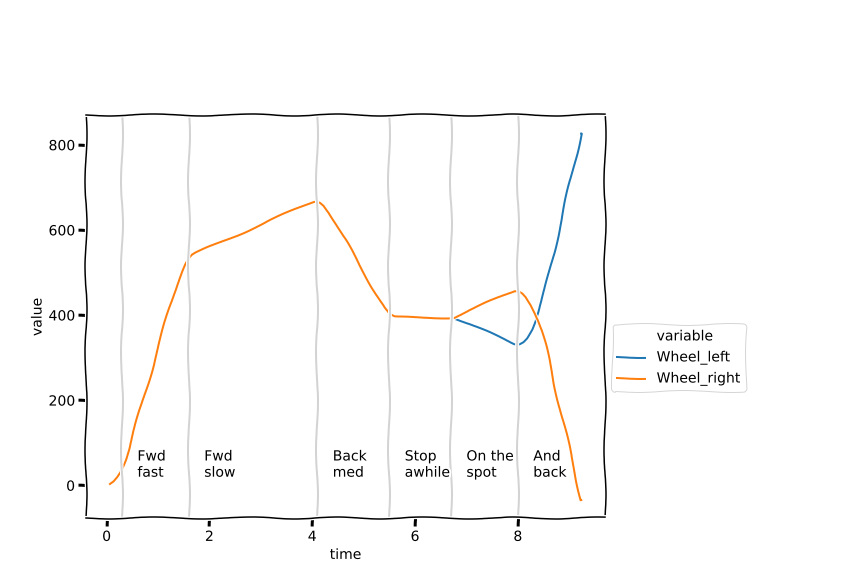

3 Keeping track of distance – how far have we come?¶
One of the main problems a robot has is locating itself in its environment: the simulated robot doesn’t know where it is in the simulated world. Within the simulator, some x and y coordinate values are used by the simulator to keep track of the simulated robot’s location, and an angle parameter records its orientation. This information is then used to draw the robot on the background canvas.
Typically when using a simulator, we try not to cheat by providing the robot direct access to simulator state information. That would be rather like you going outside, raising your arms to the sky, shouting ‘Where am I?’ and the universe responding with your current location.
Instead, we try to ensure that the information on which the robot makes its decisions comes from its own internal reasoning and any sensor values it has access to.
At this point, we could create a magical ‘simulated-GPS’ sensor that allows the robot to identify its location from the simulator’s point of view; but in the real world we can’t always guarantee that external location services are available. For example, GPS doesn’t work indoors or underground, or even in many cities where line-of-sight access to four or more GPS satellites is not available.
Instead, we often have to rely on other sensors to help us identify our robot’s location, at least in a relative sense to where it has been previously. So that’s what we’ll be exploring in this notebook.
Load in the simulator in the normal way, and then we’ll begin.
from nbev3devsim.load_nbev3devwidget import roboSim, eds
%load_ext nbev3devsim
3.1 Motor tachometer or ‘rotation sensor’ data¶
We can get a sense of how far the robot has travelled by logging the .position of each motor as recorded by its internal tachometer. Inside a real motor, a rotary encoder can be used to detect rotation of the motor. When the motor turns in one direction, the count goes up; when it turns in the other direction, it goes down.
We’ll be looking at the logged data using notebook tools, so let’s take the precaution of clearing the datalog and also setting up a default chart object:
%sim_data --clear
%sim_magic --chart
In the chart, make sure the Wheel left and Wheel right traces are selected.
As well as each sensor value, we will also capture the simulator ‘clock time’.
When running the simulator, you may have noticed that the simulator sometimes seems to slow down, perhaps because your computer processor is interrupted by having to commit resource to some other task. Inside the simulator, however, is an internal clock that counts simulator steps. Depending on how much work the simulator has to do to calculate updates in each step of the simulator run, this may take more or less ‘real time’ as measured by a clock on your wall (or, more likely, the clock on your mobile phone!).
By logging the simulator step time using the preloaded get_clock() function, we can create a more accurate plot of the sensor values at each step of simulator time, irrespective of how long that step took to calculate in the real world.
In his book New Dark Age, artist James Bridle describes the evolution of weather forecasting based on mathematical models:
In 1950, a team of meteorologists assembled at Aberdeen in order to perform the first automated twenty-four-hour weather forecast…. For this project, the boundaries of the world were the edges of the continental United States; a grid separated it into fifteen rows and eighteen columns. The calculation programmed into the machine consisted of sixteen successive operations, each of which had to be carefully planned and punched into cards, and which in turn output a new deck of cards that had to be reproduced, collated, and sorted. The meteorologists worked in eight-hour shifts, supported by programmers, and the entire run absorbed almost five weeks, 100,000 IBM punch cards, and a million mathematical operations. But when the experimental logs were examined, von Neumann, the director of the experiment, discovered that the actual computational time was almost exactly twenty-four hours. ‘One has reason to hope’, he wrote, that ‘Richardson’s dream of advancing computation faster than the weather may soon be realised’.
Historical note: Lewis Fry Richardson was an early pioneer of weather forecasting, whose story is also summarised by Bridle.
As Bridle observes, the number crunching required to perform a weather forecast requires the solution of lots of complex mathematical equations, so much so that the earliest computers might take days to make a 24-hour weather forecast. If you’re in the habit of checking online weather reports just before you set out for the day, they wouldn’t be much use if they took the next three days to compute. Although our simulator is a simple one, at times it may still take more computational resource than is available to the program for it to compute a single second of time in the simulated world in less than a second of real-world time.
Reference: Bridle, J. (2018) New Dark Age: Technology and the End of the Future, London: Verso Books.
3.1.1 Activity – Keeping track of motor position data¶
The following program logs the position count as we drive the robot forwards, backwards, wait a while, then turn on the spot slowly one way, then quickly the other. I have also instrumented it so that the simulated robot says aloud what it is about to do next as the program progresses.
For convenience, let’s clear the datalog again just here:
%sim_data --clear
Download the program, and then enable the Chart display from the simulator toggle display buttons.
Ensure the Left wheel and Right wheel traces are selected, then run the program from the Simulator controls or keyboard shortcut (R).
Observe what happens to the wheel position counts as the robot progresses.
%%sim_magic_preloaded -pC -b Empty_Map -x 250 -y 550
tank_steering = MoveSteering(OUTPUT_B, OUTPUT_C)
tank_steering.left_motor.position = str(0)
tank_steering.right_motor.position = str(0)
#tank_steering.on(DIRECTION, SPEED)
from time import sleep
SAMPLE_TIME = 0.1
def datalogger():
"""Simple datalogging function."""
print('Wheel_left: {} {}'.format(tank_steering.left_motor.position, get_clock()))
print('Wheel_right: {} {}'.format(tank_steering.right_motor.position, get_clock()))
sleep(SAMPLE_TIME)
# Move forwards quickly
say("Forwards quickly")
tank_steering.on(0, 40)
for i in range(20):
datalogger()
# Move forwards slowly
say("Forwards slowly")
tank_steering.on(0, 5)
for i in range(40):
datalogger()
# Move backwards at intermediate speed
say("Backwards medium")
tank_steering.on(0, -20)
for i in range(20):
datalogger()
# Stop awhile
say("Stop awhile")
tank_steering.on(0, 0)
for i in range(20):
datalogger()
# Turn slowly on the spot
say("On the spot")
tank_steering.on(-100, 5)
for i in range(20):
datalogger()
# Turn more quickly on the spot the other way
say("And back")
tank_steering.on(100, 50)
for i in range(20):
datalogger()
say("All done")
Record your observations about the chart data trace here. Make your own notes to describe how the behaviour of the different motor position chart traces explains the observed behaviour of the robot.
3.1.2 Viewing the data in a notebook chart¶
The chart display in the simulator uses ‘sample number’ along the horizontal x-axis to log the data. This can result in some misleading traces as we can currently only add one sensor value to each sample.
To plot the data more accurately, we need to plot the samples as a proper time series, with the sample timestamp as the x-coordinate.
We can do that by charting the data from the datalog directly in the notebook.
Retrieve the data from the datalog, and preview it:
#Grab the logged data into a pandas dataframe
df = %sim_data
#Preview the first few rows of the dataset
df.head()
Now we can chart the data:
# Load in the seaborn charting package
import seaborn as sns
# Generate a line chart from the datalog dataframe
ax = sns.lineplot(x="time",
y="value",
# The hue category defines line color
hue='variable',
data=df);
Here’s a stylised impression of what my chart looked like:

You’ll notice that I have added some vertical grey lines to my chart to indicate different areas of the chart, as well as some simple labels identifying each area.
Annotating charts can often help us make more sense of them when we try to read them. In creating such charts there is often a balance between making a ‘production quality’ chart that you could share with other people as part of a formal report (or formal teaching materials!) and a ‘good enough for personal use’ feel for your own reference.
In this regard, you may also notice that the chart shown above has an informal, stylised feel to it. The chart really was created from the data I collected, but I then styled it using an XKCD chart theme to differentiate it from the charts generated within the notebook.
3.1.3 Create your own annotated chart (optional)¶
Click on the arrow in the sidebar or run this cell to reveal how to create the annotated chart.
I used the following code to create the annotated chart. I manually set the horizontal x-axis values where I wanted the vertical lines to appear.
# Manually set x-axis coordinates for vertical lines
forward_fast = 0.3
forward_slow = 1.6
backwards_medium = 4.1
stop_awhile = 5.5
on_the_spot = 6.7
and_back = 8.0
import warnings
warnings.filterwarnings('ignore', '.*missing from current font.*',)
# We need some additional tools from matplotlib
import matplotlib.pyplot as plt
# I am using the xkcd theme.
# This gives the chart an informal
# or 'indicative example' feel
with plt.xkcd():
# Generate a line chart from the datalog dataframe
ax = sns.lineplot(x="time",
y="value",
# The hue category defines line color
hue='variable',
data=df)
# Move the legend outside the plotting area.
# The prevents it from overlapping areas of the plot
ax.legend( bbox_to_anchor=(1.0, 0.5))
o = 0.3 #offset text from line
line_colour = 'lightgrey'
def plot_line_label(x, label):
"""Annotate boundaried areas."""
# Create a vertical line
plt.axvline(x, c=line_colour)
# Create a text label
plt.text(x+o, 20, label)
# Add lines and labels to the chart
plot_line_label(forward_fast, 'Fwd\nfast')
plot_line_label(forward_slow, 'Fwd\nslow')
plot_line_label(backwards_medium, 'Back\nmed')
plot_line_label(stop_awhile, 'Stop\nawhile')
plot_line_label(on_the_spot, 'On the\nspot')
plot_line_label(and_back, 'And\nback');
# We can save the image as a file if required.
# Increase the figure size
#plt.figure(figsize=(12,8))
# Nudge the margins so we don't cut off labels
#plt.subplots_adjust(left=0.1, bottom=0.1,
# right=0.7, top=0.8)
# Save the image file
#plt.savefig('position_time.png')
3.1.4 Activity – Observing motor position counts for different motor actions (optional)¶
How do the position counts vary for each wheel if the robot is driving forwards in a gentle curve, or a tight turn?
For example, we might create such turns using the following steering commands:
# Graceful forwards left
tank_steering.on(-30, 20)
# Tighter turn forwards and to the right <!-- JD: but this is the same as the code above for a 'graceful left turn'. Needs to be something like 40, 100 -->
tank_steering.on(-30, 20)
Feel free to make your own predictions, or run a program, grab the data and analyse it yourself. If you do run your own experiment(s), then remember to clear the datalog before running your data-collecting code in the simulator.
3.2 Measuring how far the robot has travelled¶
The wheel position data corresponds to an angular measure, that is, how far the wheel has turned.
3.2.1 Activity – Driving the robot for a fixed number of wheel rotations¶
Use the following program to drive the robot for a fixed number of rotations and observe how the position count increases. Based on your observations, make a note of what you think the position count actually measures.
%%sim_magic_preloaded
tank_steering= MoveSteering(OUTPUT_B, OUTPUT_C)
def reporter(last_position=0):
position = int(tank_steering.left_motor.position)
diff = position - last_position
print('Current {}, diff {}'.format(position, diff))
say('Diff {}'.format(diff))
return position
tank_steering.on_for_rotations(0, 10, 1)
last_position = reporter()
tank_steering.on_for_rotations(0, 10, 1)
last_position = reporter(last_position)
tank_steering.on_for_rotations(0, 10, 1)
reporter(last_position)
Based on your observations of position counts for the number of wheel rotations travelled, what do you think the position value measures? Bear in mind that the simulation, like the real world, may have sources of noise that affect the actual values recorded, rather than ‘ideal’ ones.
Record your impressions here.
Example observations¶
Click the arrow in the sidebar or run this cell to reveal my observations.
When I ran the program, I got counts between 365 and 380 for each rotation, depending in part on the speed I set the wheels to run at.
The simulator actually runs in steps, with 30 steps per simulated second. This means that at 20% speed, the wheel will turn approximately 6 to 7 degrees each step. By the time the simulator detects that the wheel has reached at least 360 degrees (i.e. completed one rotation), it may already have exceeded that amount of turn; so the stopping condition for the .on_for_rotations function, which is based on observing the turned angle, may actually stop the motors after more than one rotation.
So notwithstanding the values we get for the position count after a single rotation, the position is actually measured in degrees.
3.3 Controlling the distance travelled¶
If we can continuously monitor the distance we have travelled, then we can use that as part of a control strategy in a non-blocking way: rather than tell the motors to turn on for N rotations, we can just turn them on, and then take a particular action when they have turned far enough as we have measured them.
3.3.1 Activity – Are we there yet?¶
In this activity, you will experiment with driving the robot over a fixed distance.
Nominally, the wheel diameter is set in the robot configuration file to 56, that is, 56 mm, so just under six centimetres.
What this means is that we can drive the robot forward a specified distance.
The bands shown on the Coloured_bands background are 60 cm high.
See if you can write a program that drives the robot exactly the length of one of the bands by monitoring the position value of one of the motors as the robot drives in a straight line.
How accurately can you cover the distance? (Don’t panic, or waste too much time, if you can’t…). Comment on your results.
Hint: how many degrees will the wheel need to turn for the wheel to turn 60 cm?
Warning: if you use a loop then put something in it that uses up simulator time and progresses the clock, such as a short sleep(0.1) command, otherwise you may find that your simulator Python program gets stuck and hangs the browser.
If that happens try to reload the notebook in the browser.
If that doesn’t work, from the notebook home page, try to shutdown the notebook.
If that is also stuck, restart your browser.
If things are still not working properly, you will need to restart the container from Docker dashboard or the command line: docker restart tm129vce.
Note: the .position value is returned as a string and should be converted to an integer (int) if you want to use it numerically.
How many degrees does the wheel need to turn? Record your calculation and result here.
Remember that you can use a code cell as a interactive calculator. You can access pi as a number by importing from math import pi.
%%sim_magic_preloaded -b Coloured_bands -p -x 1100 -y 200 -a 90
from time import sleep
# Your code here
Record your notes and observations here about how effectively the robot performed the desired task.
Example observations¶
Click on the arrow in the sidebar or run this cell to reveal some example observations.
The position counter reports the number of degrees turned by the wheel, so let’s start by finding out how many degrees we need to turn the wheel to travel 60 cm.
Recall that the wheel diameter is 56 mm.
from math import pi
distance = 60 #cm
# 56mm is 5.6cm
circumference = 5.6 * pi
no_of_turns = distance / circumference
no_of_degrees = no_of_turns * 360
int(no_of_degrees)
We can use this calculation in a program that drives the robot forward until the wheels have turned by the desired amount, and then stops.
Note that the speed of the robot may affect how accurately the robot can perform the task, bearing in mind the comment earlier about how the simulator uses quite crude discrete time steps to animate the world.
%%sim_magic_preloaded -b Coloured_bands -p -x 1100 -y 200 -a 90
from time import sleep
tank_steering= MoveSteering(OUTPUT_B, OUTPUT_C)
# Go Forwards
DIRECTION = 0
SPEED = 20
tank_steering.on(DIRECTION, SPEED)
# Do the math...
from math import pi
distance = 60 #cm
# 56mm is 5.6cm
circumference = 5.6 * pi
no_of_turns = distance / circumference
no_of_degrees = no_of_turns * 360
while int(tank_steering.left_motor.position) < no_of_degrees:
sleep(0.01)
print("Position: {}".format(tank_steering.left_motor.position))
When I ran the program, it did pretty well, running between the lines and stopping maybe just a fraction too long.
3.4 Measuring the width of a coloured track¶
One of the activities in the Open University T176 Engineering residential school is a robotics challenge to recreate a test track that depicts several coloured bands of various widths purely from data logged by an EV3 Lego robot.
Let’s try a related, but slightly simpler challenge: identifying the width of the track that is displayed on the Loop background.
3.4.1 Using logged data to take measurements from the simulated world (optional)¶
In this activity, you will use data logged by the robot to learn something about the structure of the world it is operating in.
Clear the data from the datalog:
%sim_data --clear
Then download and run the following program in the simulator to drive the robot over the test track.
%%sim_magic_preloaded -C -b Loop
from time import sleep
SAMPLE_TIME = 0.1
tank_steering= MoveSteering(OUTPUT_B, OUTPUT_C)
# Define a light sensor
colorLeft = ColorSensor(INPUT_2)
def datalogger():
"""Simple datalogging function."""
print('Wheel_left: {} {}'.format(tank_steering.left_motor.position, get_clock()))
print('Light_left: {} {}'.format(colorLeft.full_reflected_light_intensity, get_clock()))
sleep(SAMPLE_TIME)
tank_steering.on(0, 20)
while int(tank_steering.left_motor.position)<1000:
datalogger()
From a chart display of the data, such as the one that is generated if you run the code cell below, how might you identify the width of the black line?
Hint: in the interactive plotly chart, if you hover over the chart to raise the plotly toolbar then you can select Compare data on hover to report the line values for a particular x-axis value; the Toggle Spike Lines view will also show dynamic crosslines highlighting the current x- and y-values.
import pandas as pd
pd.options.plotting.backend = "plotly"
# Grab the logged data into a pandas dataframe
df_line = %sim_data
# Generate a line chart from the datalog dataframe
df_line.plot( x = 'time', y = 'value', color='variable')
How can you use the logged data displayed in the chart above, or otherwise, to work out how wide the black line is? What other information, if any, do you need in order to express this as a distance in (simulated) metres?
Record your observations here.
Example observations¶
Click on the arrow in the sidebar or run this cell to reveal some example observations.
The chart shows the increasing trace from the position sensor and another trace for the light sensor. The light sensor value dips from 100 to 0 as the robot goes over the black line, then goes back to 100.
The horizontal x-axis is simulator time. If we take the position count reading at the same time that the robot detects the black line, and again at the same time that the robot crosses back onto the white background, then we can subtract the first position value from the second to give use the distance travelled by the robot.
To convert this to simulated metres, we would need to know what distance is travelled for a motor position increment value of 1.
If the position count is an angular measure (for example, degrees of wheel turn), then we could calculate the distance travelled as:
wheel_circumference * degrees_turned / 360
since the distance travelled by the wheel in one complete turn is the same as its circumference.
We could calculate the circumference as:
wheel_circumference = 2 * wheel_radius * pi
or:
wheel_circumference = wheel_diameter * pi
both of which could be measured from the robot if we had physical access to it.
3.5 Summary¶
In this notebook you have seen how the motor position tachometer can be used to record how far, in fractions of a turn, each motor has turned. Moving forwards increases the motor tacho counts, whereas reversing reduces them both; turning increases one whilst reducing the other.
Tacho counts are very useful for providing an indicative feel for how a robot has travelled, but they may not be particularly accurate. As with many data traces, trends and differences often tell us much of what we need to know.
Through working with the motors and sensors at quite a low level, you have also started to learn how the implementation of the simulator itself may affect the performance of our programs. In certain cases, we may even have to do things in the program code that are there simply to accommodate some ‘feature’ of the way the simulator is implemented that would not occur in the real robot. In the physical world, time flows continuously of its own accord – in real time! In the simulator, we simulate it in discrete steps, which may even take longer to compute than the amount of time the step is supposed to represent.
In the next notebook, you will review another sensor that helps our robot know where it’s going: the gyro sensor.